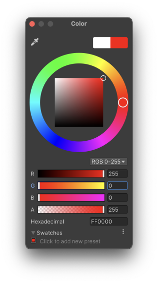
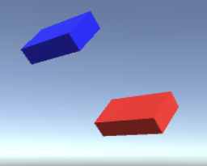
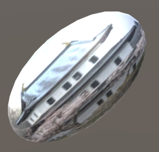

Unity ではゲームを作るために必要な 3D モデル、画像、音楽、その他のデータを引っくるめて「アセット(Asset)」と呼びます。
ゲームオブジェクトを着色したりテクスチャを貼りたい時は「マテリアル(Material)」と呼ばれるアセットを作成してゲームオブジェクトにセットする必要があります。
ここではそのマテリアルの使い方を学びましょう。
※ 物理マテリアル(Physic Material) という名前が似ているアセットがあるので、そちらを選ばないよう気を付けて下さい
では早速以下の手順でマテリアルを作成して下さい。
アセットフォルダの空いている部分を右クリックしてメニューを表示し、Create → Folder でフォルダを新規作成し、「Materials」という名前に変更する
Materials フォルダの中に入り、空いている部分を右クリックしてメニューを表示し、Create → Material を選ぶ ※ Physic Material の方を選ばないよう注意
Materials フォルダ内に「New Material」というアセットが出来るので「HAKO Material」に名前を変更する
HAKO Material をクリックしてインスペクタを表示する
Albedo という文字列の隣の白い四角をクリックすると色選択ウィンドウが出てくるので、赤色(RGBA = (255、0、0、255) )に設定する(図1)
図1. 色選択ウィンドウで赤色をセット

HAKO Material をドラッグしてヒエラルキーの HAKO の上にドロップすると HAKO が赤色に変わる
同様に Materials フォルダ内に「HAKO2 Material」も作って HAKO2 を青(RGBA = (0、0、255、255)) に変更する
以上を実行すると図 2 の様になります。
図2. 色を付けた状態

次にテクスチャ(模様)画像を貼ってみます。
貼る画像は何でも良いのですが今回は例として以下の図3を使ってみます。
図3. テクスチャ用サンプル画像 (ちなみに松前城)
では以下の手順でテクスチャを貼ってみましょう。
図3(Texture.png)を保存したら OS のファイラ(エクスプローラや Finder など)でダウンロードフォルダを開く
Unity エディタのアセットフォルダの空いている部分を右クリックしてメニューを表示し、Create → Folder でフォルダを新規作成し、「Images」という名前に変更する
Images フォルダの中に入り、ダウンロードした Texture.png をドラッグ＆ドロップする
Images フォルダ内に「Texture」というアセットが出来るので、アセット名を「TAMA Image」に変更する
※ アセット名の上をマウス長押しするか、右クリック → Rename で名前の変更が出来ます
Materials フォルダ内に「TAMA Material」を作成する
TAMA Material のインスペクタの Albedo の文字列の先頭にある◎をクリックして画像選択ウィンドウを開き、TAMA Image を選択する
TAMA Material をドラッグしてヒエラルキーの TAMA の上にドロップする
すると図4の様にテクスチャが TAMA に貼られます。
なおゲームビューよりもシーンビューで拡大表示した方が見やすいと思います。
図4. テクスチャを貼った状態(シーンビューで拡大表示)

なお「TAMA Material」のインスペクタを開き、 Tiling の数字を大きくすると画像が並べて貼り付けられます。
またその下にある Offset の x と y の数字を 0〜1 の間で変更すると画像が貼られる位置が変わります。
色々値を変えてどうテクスチャが変わるか確認してみましょう。
※ Tiling と Offset を入力する場所は 2 箇所ありますが上の方に数字を入れます